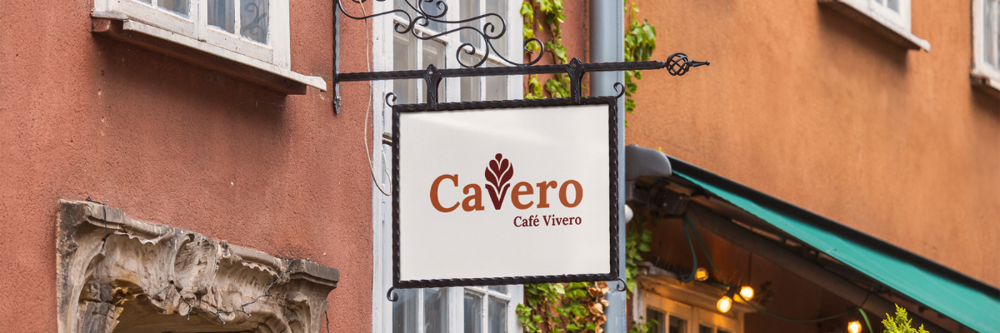
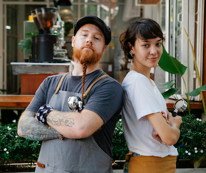

Bienvenidos a Cavero, café y vivero
Café y naturaleza
Donde el café y la naturaleza se encuentran
CAVERO es más que una cafetería: es un espacio donde el café de especialidad y la naturaleza conviven en armonía. Ubicado a pasos de la costanera de Vicente López, nace de la unión entre dos pasiones: el diseño de espacios verdes de Lali y el arte del café de Lucas. Juntos crearon un lugar acogedor, atendido por sus propios dueños, donde cada detalle está pensado para invitar a una pausa consciente. En CAVERO podés disfrutar de una taza de café rodeado de plantas, aromas, luz natural y texturas que remiten a lo simple, a lo artesanal, a lo real. Además del café, ofrecemos un vivero con flores de estación, ramos y plantas seleccionadas para llevarte un pedacito de este universo verde a casa. Creemos en los espacios que inspiran, en los sabores que quedan en la memoria y en los encuentros que suman. CAVERO. Donde el café y la naturaleza se encuentran.
